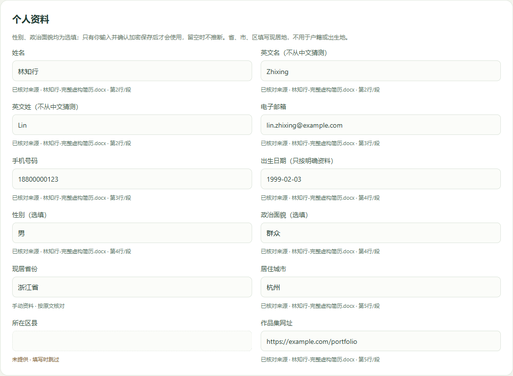
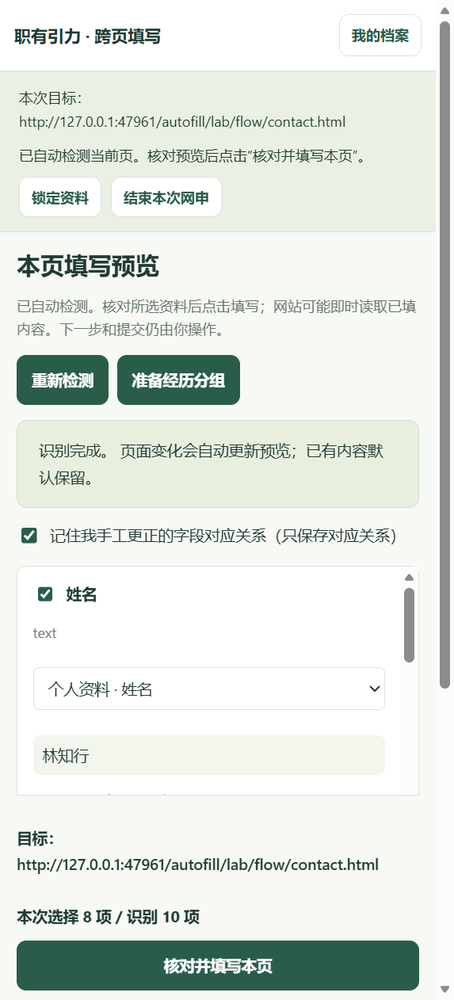
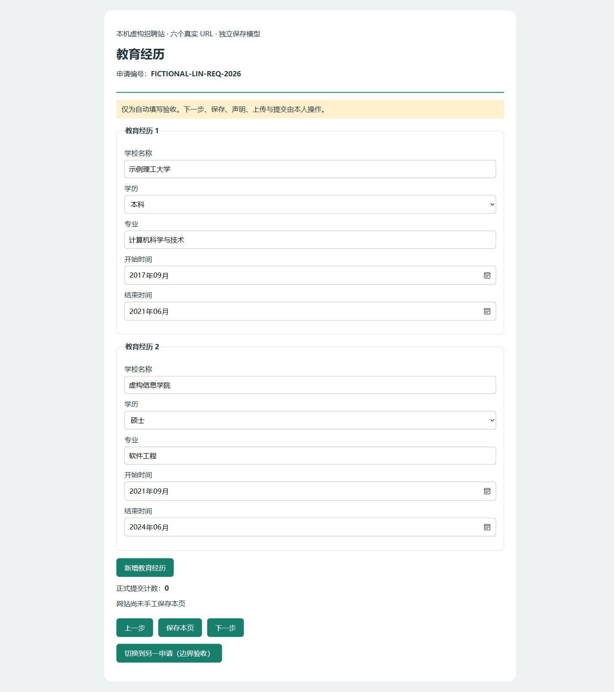
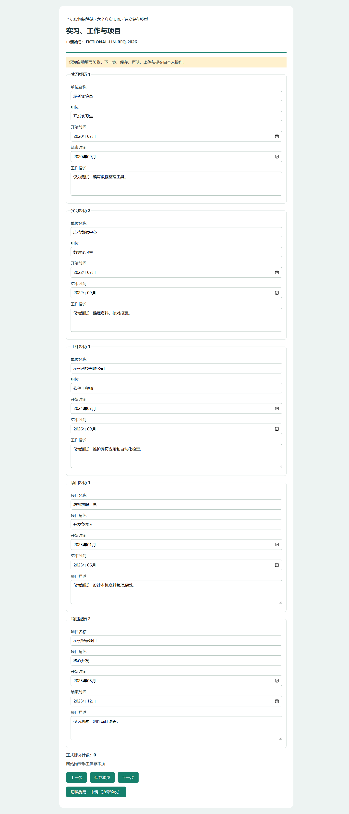
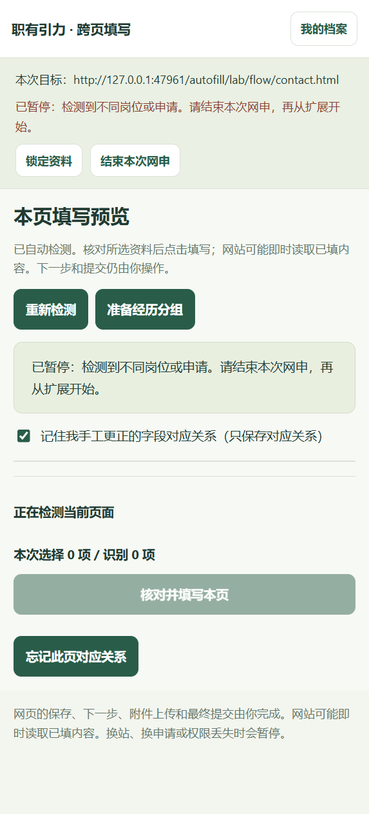

这次网申，只解锁一次
职有引力0.4.1 Beta跨页候选。先导入并确认保存一份简历，再通过浏览器工具栏打开常驻侧栏。下面的实测截图使用虚构资料，不代表已安装到你的日常Edge。
1. 安装或更新一次
- 把Windows压缩包全部解压到固定文件夹，双击“开始使用.exe”。不要只提取EXE。
- 首页点“自动填写 / 安装扩展”，复制显示的准确安装目录。
- Edge地址栏输入
edge://extensions，清空搜索，打开“开发人员模式”。Chrome使用chrome://extensions。 - 点“加载解压缩的扩展”，选择复制的整个 extension 文件夹。确认“职有引力 · 本机求职填表”版本 0.4.1、开关开启、图标固定到工具栏。
- 已有旧扩展先导出加密档案备份，再保留旧副本但关闭它。加载新目录后导入该加密备份；若只是同一目录更新，点“重新加载”。不要同时开启两份扩展。
- 回到首页刷新，核对扩展安装状态。测试浏览器已加载并不等于日常浏览器已安装。
浏览器安全机制要求本人手动启用和加载，无法静默安装。由单位管理的电脑可能限制开发人员模式。
2. 导入一次，缺失信息自己补齐
首页点击“导入简历”，设置12字符以上口令，选择DOCX或有文字层的PDF，核对来源、经历顺序、日期和冲突，点击一次“确认导入并加密保存”。未确认的草稿不会用于填写。
- 识别不全时，可在导入预览直接修订；已经保存后，点我的档案，输入口令解锁。
- 修改个人资料，或在教育、实习、工作、项目、技能、证书等类别中添加记录，补全内容；已有记录可以逐条修改和删除。
- 点确认并加密保存。看到成功即完成，不需要再导入原简历。
- 回招聘页，旧预览会因档案更新锁定；重新解锁，扩展使用刚保存的最新资料自动填写。
工作台与扩展共用已确认的档案，不用在两个地方重新输入。导出加密备份并妥善保存口令，忘记口令无法恢复资料。首次导入与备份的图文说明见 原版首次使用说明。

3. 从招聘页开始
- 正常打开招聘系统，完成网站登录，进入填写资料的页面。
- 点击工具栏职有引力图标，再点开始跨页填写。右侧常驻侧栏打开。
- 侧栏输入档案口令，点解锁并开始本次网申。口令使用后立即清空。
- 助手自动检测当前页，显示本次网站和字段预览。核对姓名、联系方式、每段经历、日期、学历等来源和值。
- 核对后点一次核对并填写本页，看填写结果，再检查网页。已有内容默认保留；覆盖需要逐项明确确认。

4. 接着填下一页
- 按网站自己的要求检查并保存，由你点击“下一步”。
- 侧栏保持打开。新页面、刷新、回退、同地址换步骤、字段异步出现后，旧预览失效并自动更新。无需每页重新打开扩展、输口令或点击识别。
- 网站只显示一条经历时，点一次“准备经历分组”，等记录出现并自动重新检测，然后核对顺序。新增按钮无法可靠判断时手工添加，再等待自动检测。
- 再次核对并填写本页。不确定的字段保留人工处理；档案只提供已有事实，不替你猜答案。
- 遇到失败或回滚，查看结果与网页，可点“重新检测”重试。失败不会显示为成功。


5. 暂停、锁定和结束
切到其他标签页会暂停，不会转而填写新标签。进入不同网站、检测到不同岗位或权限丢失，会清除旧预览；请在新的招聘页重新点扩展开始。部分系统没有可靠的岗位标识，侧栏会明确提示，仍需逐页确认是同一次申请。
5分钟未操作助手会自动锁定，网页消息和自动检测不会延长期限。重新解锁即可继续原目标；一次开始的总授权最长30分钟，到期需要从招聘页重新开始。点“锁定资料”立即清除资料预览和解锁状态；点“结束本次网申”清除本次目标。更改档案后，旧预览锁定，重新解锁最新资料。

口令与解锁档案只在可信侧栏内存中，招聘页仅接收本人确认填写的字段。已输入网页的资料可能立即被网站读取，不能以“没有最终提交”理解为网站没有收到资料。
自己验收六页完整网申
- 从虚构样本下载“林知行完整虚构简历.docx”，导入并确认保存。不要向企业提交虚构资料。
- 在首页“自动填写”中打开“六页完整网申练习”。这是本机模拟网站，有联系方式、教育、经历、额外问题、附件声明、最终核对6个真实网址。
- 从工具栏开始跨页填写、解锁一次。第一页核对并填写，已有作品集网址应保持不变。
- 本人保存并下一页。教育页点击“准备经历分组”，确认两段教育；经历页核对两段实习、一段工作和两段项目。
- 额外问题页等待城市异步选项，在网站上选择是否补充信息。未知问题应保留空白。点击同地址进入技能步骤，确认侧栏已换预览。
- 附件、身份证号码、声明与未知问题不自动处理。最后核对页模拟提交计数必须仍为0；不要点正式提交。
- 可刷新或回退，检查已填值与本人更正仍保留。若只看输入框值不足以确认，页面独立证据展示DOM、受控模型和模拟保存值。
仍需人工处理的范围
本次交付解决同一标签页、同一来源的跨页连续检测。跨域、弹出新标签、iframe/Shadow DOM、复杂自定义控件及尚未验收的真实站点可能暂停或需要手填。登录、验证码、人脸验证、声明、附件上传、证件及未录入档案的问题由本人处理。不会自动选择岗位特定问题的答案，不会自动保存网页或最终提交。
Chrome的安装流程与Edge相同，实际本机验收浏览器为隔离Edge；真实企业的端到端申请流程、另一台Windows电脑以及真人节时比例仍不冒充已验证。扫描OCR、密码PDF和旧DOC不在本次范围。
回退与原功能
0.4.0冻结目录和0.2.1/0.3.0历史成果保留。回退时先用当前版本自己的“停止工作台.exe”，再启动旧版，关闭新扩展、启用旧扩展。个人收藏、标签、薪资条件和投递记录未改数据格式。换浏览器或端口前导出本机记录备份；档案使用独立加密备份。复制旧岗位研究快照不会更新核验日期，ZIP不附未经许可的岗位数据。
完整实测结果、明确失败/待验证项及维护交接见本目录“跨页验收报告”和“跨页项目交接”。本机候选未公开发布。